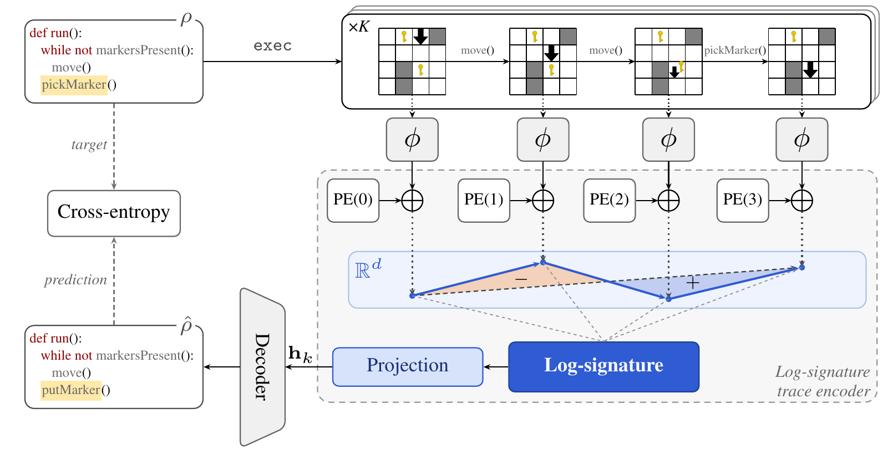
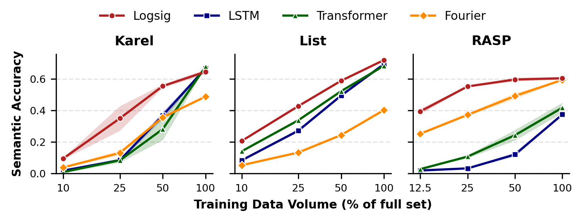
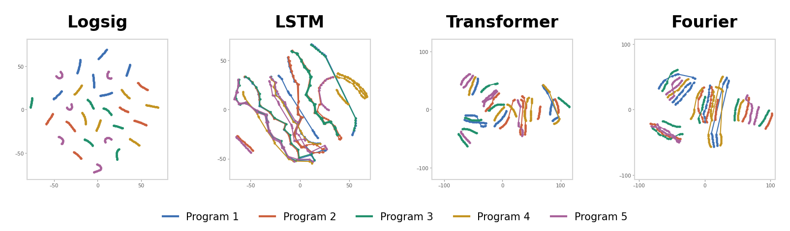

The Shape of a Program Path Signatures for Trace-to-Program Induction

TL;DR We treat program execution traces as paths and encode them with the log-signature, a parameter-free summary of a path's shape from rough path theory. It is the most accurate trace encoder in 11 of 12 settings across three domains, and its lead is largest when training data is scarce.
Abstract
Synthesizing programs from execution traces is a fundamental challenge in algorithmic interpretability and the reverse engineering of complex systems. We bring a rough-path-theoretic perspective to program induction, treating execution traces as high-dimensional rough paths and encoding them with the path signature transform, a tool from stochastic analysis whose expectation provably characterizes the distribution of traces a program induces. On three program-induction domains, Karel, List, and RASP, our log-signature trace encoder outperforms LSTM, Transformer, and Fourier baselines in almost every setting, with its largest margins when training data is scarce. We further observe that the trace-to-program pipeline is naturally contractive: it often produces valid programs that are shorter than the ground truth. We turn this into a bootstrapping procedure that exposes redundancy in the ground-truth supervision without any external oracle, which we demonstrate on redundancy-injected versions of our datasets. Finally, the log-signature encoder induces a markedly more interpretable latent geometry than the baselines, in which the nearest neighbors of every state lie on its own execution trace.
How it works
- Run. The hidden program is executed from several initial states, giving a set of execution traces (sequences of states).
- Embed. A state encoder φ maps every state to a point in ℝd. Each step between points is rescaled to unit length and a sinusoidal positional code is added, so each trace becomes a path.
- Summarize. The truncated log-signature (level 2) turns each path into a fixed-size vector, whatever its length. A linear projection is the encoder's only trainable part.
- Decode. A Transformer decoder attends over the trace embeddings and writes the program token by token. Grammar masking keeps every output syntactically valid.
A program is pinned down by its traces
Running a program from random initial states induces a distribution over traces. For bounded-length traces such as ours, the expected signature uniquely determines this distribution (Chevyrev & Lyons, 2016), so averaging signatures over executions estimates an object that identifies the program up to behavior.Signatures compose like executions
By Chen's identity, the signature of a path split at any time t is the tensor product of the signatures of its two pieces:Domains
Karel
A robot in a 2D grid world with walls and markers. Stands in for visual and spatial domains: robot control, tile puzzles, agent navigation.List
Symbolic manipulation of a variable-length integer list through a cursor. Stands in for array and string tasks: sorting, searching, counting.RASP
Maps, shifts, thresholds and counts over token sequences, from the language of Transformer computations. Stands in for functional sequence-to-sequence programs.A decoded program counts as correct if, run from the same initial states, it reproduces every given trace. We call the share of correct test programs semantic accuracy.
Highlights
The log-signature encoder outperforms the LSTM, Transformer, and Fourier baselines in almost every setting, with its largest margins when training data is scarce.

Bootstrapping exposes substantial redundancy in the ground-truth supervision, with no external oracle required.
The trace-to-program pipeline is contractive: the model often outputs a program that is shorter than the ground truth yet reproduces every trace. We replace a training label whenever the model finds such a strictly shorter, verified program, and repeat. What this removes is a lower bound on how much shorter the supervision could have been. Our datasets hold little such redundancy (on Karel and List, a greedy search over trace-preserving local edits removes only 4.5% and 5.2% of the tokens), so we measure it on redundancy-injected copies, Karel+, List+ and RASP+: half of each set's programs are rewritten with extra structure that leaves every trace unchanged, such as S → REPEAT 1 (S), which adds about 20% of the tokens. Every encoder removes a substantial share, so contractivity is better understood as a property of the trace-to-program pipeline than of any one encoder.
| Karel+ | List+ | RASP+ | ||||
|---|---|---|---|---|---|---|
| Encoder | Tokens removed | Programs shortened | Tokens removed | Programs shortened | Tokens removed | Programs shortened |
| LSTM | 21.11% | 58.66% | 22.37% | 59.42% | 13.41% | 32.33% |
| Transformer | 20.92% | 57.81% | 22.58% | 59.82% | 18.26% | 44.08% |
| Fourier | 18.43% | 52.89% | 18.19% | 49.62% | 18.64% | 44.98% |
| Log-Signature | 21.07% | 58.59% | 22.70% | 59.88% | 19.84% | 47.92% |
The log-signature encoder induces a more interpretable latent geometry.
For the log-signature model, the embedded states of each trace form a separate chain; for the baselines, the traces of different programs run alongside and across one another. Measured over 20 test programs, the five nearest neighbors of every log-signature state lie on its own trace, on all three domains.

BibTeX
@inproceedings{ghanem2026shape,
title = {The Shape of a Program: Path Signatures for Trace-to-Program Induction},
author = {Ghanem, Mohamed and Finkbeiner, Bernd},
booktitle = {Advances in Neural Information Processing Systems},
year = {2026}
}